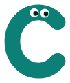
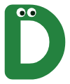
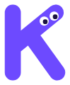
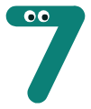
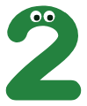

Copy from anywhere. Land it in your doc.
Better Docs is a Chrome extension for Google Docs. Plant helpers in your doc, then send text from any website straight to them. Autogramulate accepts spelling and grammar fixes for you while you pause typing.
Put your cursor anywhere in a Google Doc and click Plant helper here. A little helper creature shaped like the letter A appears. On any website, highlight text and send it to that helper: it lands right before the helper, so the next thing you send lands after it, in order.
Turn on Fix grammar as I type in the Better Docs panel inside Google Docs. When you pause typing, it accepts spelling and grammar fixes for you.
Every helper is a little creature shaped like its letter: A to Z, then 1 to 9. In the Better Docs panel they bob, blink and watch your pointer, and they do a happy squish when your text arrives. In your doc, each one is a small picture sitting exactly where your next text will land.





Creatures in the panel and creature pictures in your doc.
Sleek colored tags in the panel and plain text markers like ⟦A⟧ in your doc. Switch any time under Helper look; your helpers already in docs change with it.
Better Docs asks Google for one permission: "See, edit, create, and delete all your Google Docs
documents" (https://www.googleapis.com/auth/documents). It needs it to place helper markers,
insert the text you send, and apply spelling and grammar fixes, because Google Docs can only be edited reliably
through Google's Docs API.
Better Docs' use and transfer of information received from Google APIs to any other app will adhere to the Google API Services User Data Policy, including the Limited Use requirements.
The privacy policy explains exactly what is accessed, stored and deleted.
Better Docs is in a limited release on the Chrome Web Store. To try it, email a.subject.humanity@gmail.com for the install link. It needs Chrome 119 or later.
Questions, bug reports or privacy requests: a.subject.humanity@gmail.com.